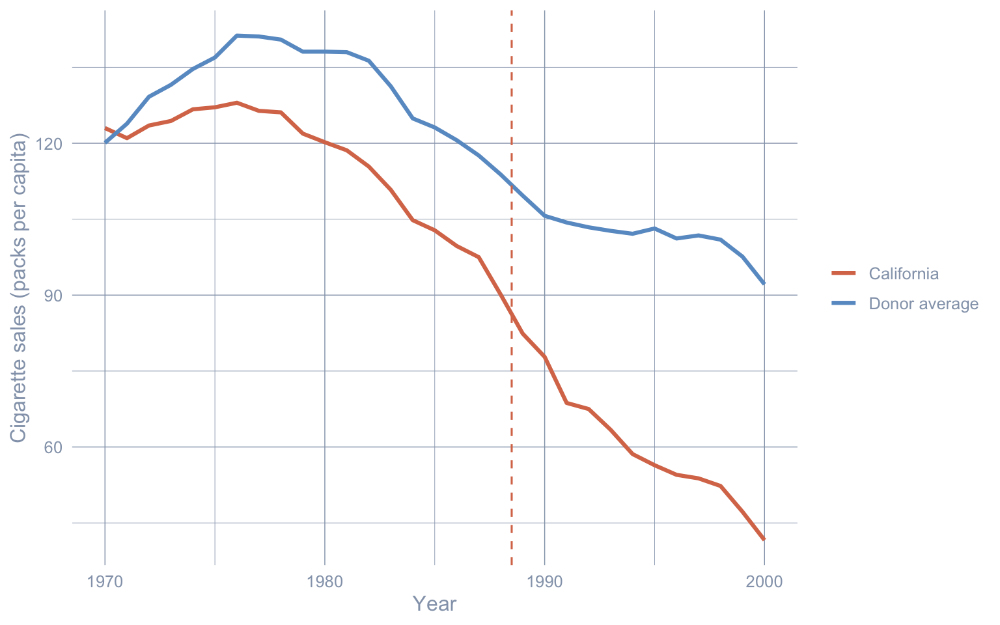
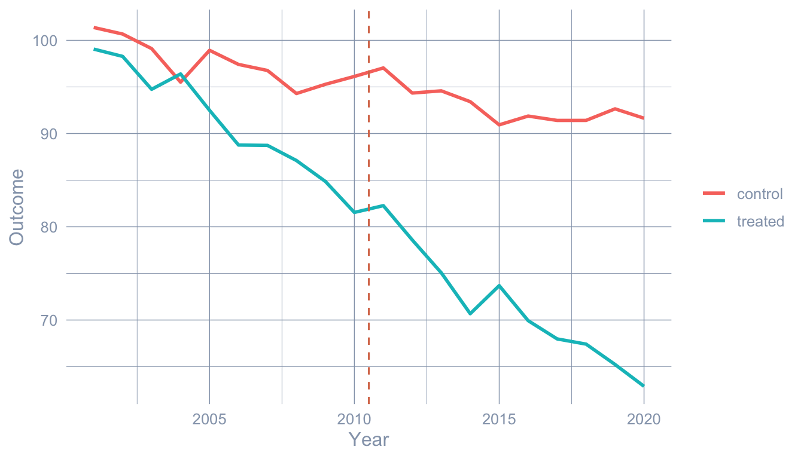

flowchart TB
Q0{"Is treatment staggered across<br/>many units (different units<br/>adopt at different dates)?"}
Q0 -->|Yes, staggered adoption<br/>across a panel| Q4{"Do you trust parallel trends<br/>(conditional on covariates),<br/>or is a factor structure<br/>more credible?"}
Q0 -->|No, one treated unit or<br/>shared start date| Q1{"Do you have a credible<br/>donor pool of untreated units?<br/>(roughly 10+ similar units<br/>followed over the same window)"}
Q4 -->|Parallel trends OK| CSA["Staggered DiD / Callaway-Sant'Anna<br/>(ch. 8)<br/><br/>Cost: conditional parallel trends<br/>at the cohort level"]
Q4 -->|Factor structure more credible| Q5{"Fit factors on the full panel,<br/>or project treated units onto<br/>factors from a clean donor pool?"}
Q5 -->|Full panel, low-rank residuals| MC["Matrix Completion / IFE<br/>(ch. 9)<br/><br/>Cost: latent-factor model fits<br/>the untreated cells well"]
Q5 -->|Project onto donor factors| GSC["Generalized Synthetic Control<br/>(ch. 10)<br/><br/>Cost: never-treated controls<br/>span the factor space"]
Q1 -->|Yes| Q2{"Do you want frequentist<br/>placebo inference,<br/>or Bayesian credible<br/>intervals?"}
Q1 -->|No, only one good control| DiD["Basic Difference-in-Differences<br/>(ch. 3)<br/><br/>Cost: parallel-trends assumption<br/>on a single comparison unit"]
Q1 -->|"No, only the treated unit<br/>(model the smooth pre-trend)"| ITS["Interrupted Time Series<br/>(ch. 2)<br/><br/>Cost: pre-trend extrapolation<br/>must be specified correctly"]
Q2 -->|Frequentist + tidy code| SCM["Classical Synthetic Control (ch. 4)<br/>+ prediction intervals via scpi (ch. 6)<br/><br/>Cost: convex-combination of donors<br/>must match the treated pre-period"]
Q2 -->|Bayesian + uncertainty bands| Q3{"Do you suspect treatment<br/>spills over onto donor states<br/>(violating SUTVA)?"}
Q3 -->|No, SUTVA OK| CI["Structural Bayesian TS<br/>(ch. 5)<br/><br/>Cost: state-space prior;<br/>covariate-set choice<br/>affects the estimate"]
Q3 -->|Yes, spillovers likely| SPATIAL["Bayesian Spatial SCM<br/>(ch. 7)<br/><br/>Cost: horseshoe prior + SAR spatial term;<br/>neighbour matrix W must be plausible"]
NAIVE["Naive pre-post<br/>(this chapter)<br/><br/>Use only as a baseline.<br/>Never as a causal estimate."] -.->|"baseline for everyone"| Q0
1 Introduction
1.1 Why regional impact evaluation?
How do you measure the causal effect of a policy when you cannot randomise who gets treated? Most policy reforms hit a region — a state, province, or country — as a single block. There is no randomisation, no control arm, and often only a handful of treated units. The job of regional impact evaluation is to recover the missing counterfactual: what would the region have looked like without the policy?
Two running case studies anchor the book. Part I (chs. 1–7) stays with the canonical single-treated-unit setting: California’s 1989 Proposition 99 cigarette tax. Per-capita cigarette sales in California fell from 116 packs in 1988 to 60 packs in 2000 — almost a 50% drop — but the country as a whole was also smoking less, and the deceptively simple question is
How much of California’s drop was caused by Proposition 99, and how much would have happened anyway?
The original synthetic-control paper by Abadie et al. (2010) used exactly this dataset; we replicate their estimate and watch what happens when seven other estimators are swapped in. Part II (chs. 8–10) generalises the missing-data logic to a staggered-adoption panel: thousands of US counties faced state minimum-wage increases at different years, and the toolkit shifts from a single time series to estimators that exploit the full panel structure.
This book is a guided tour of the quasi-experimental methods that have become the workhorses of that job. Each one builds the counterfactual from a different data source — the region’s own past, a single neighbour, a weighted blend of donor regions, a Bayesian time-series model, or a factor structure estimated from a wide panel — and each one therefore pays a different price in identifying assumptions. The disagreements between methods are the lesson.
1.2 Causal inference as a missing-data problem
Before fitting any model, we need a vocabulary for what we are estimating. The cleanest one is the potential outcomes framework, due to Neyman (1923) and Rubin (1974). Its central insight is that causal inference is a missing-data problem.
1.2.1 Two outcomes per unit, one observed
For each unit \(i\) at time \(t\), imagine two potential outcomes:
- \(Y_{it}(1)\) — cigarette sales in state \(i\) at year \(t\) with Proposition 99 in force.
- \(Y_{it}(0)\) — cigarette sales in state \(i\) at year \(t\) without Proposition 99 in force.
Let \(D_{it} \in \{0, 1\}\) be the treatment indicator. Here \(D_{it} = 1\) for California from 1989 onward, and \(D_{it} = 0\) everywhere else (every other state, plus California up to and including 1988). The outcome we observe is one of the two potential outcomes, never both:
\[Y_{it} \,=\, D_{it}\, Y_{it}(1) \,+\, (1 - D_{it})\, Y_{it}(0).\]
In words: if California in 1995 was treated, we observe \(Y_{1995}(1)\) — not the counterfactual \(Y_{1995}(0)\), which is what California’s smoking would have been in 1995 had Proposition 99 never passed. That counterfactual is the missing data.
Writing \(Y_{it}(1)\) and \(Y_{it}(0)\) as well-defined quantities implicitly assumes the stable unit treatment value assumption (SUTVA): state \(i\)’s potential outcomes depend only on its own treatment status, not on what other states are doing. SUTVA is harmless for many policies; for tobacco taxes on the California border it is exactly the assumption that chapter 7 will relax.
1.2.2 The fundamental problem of causal inference
Make the missing data concrete. The table below shows what is observed (✓), what is undefined because the state was never treated (—), and what is missing-and-must-be-imputed (?) for a handful of rows.
| State | Year | \(D_{it}\) | \(Y_{it}(0)\) | \(Y_{it}(1)\) | Observed |
|---|---|---|---|---|---|
| California | 1988 | 0 | 90.1 ✓ | ? | 90.1 |
| California | 1989 | 1 | ? | 82.4 ✓ | 82.4 |
| California | 1995 | 1 | ? | 56.4 ✓ | 56.4 |
| California | 2000 | 1 | ? | 41.6 ✓ | 41.6 |
| Nevada | 1988 | 0 | 142.0 ✓ | — | 142.0 |
| Nevada | 1995 | 0 | 100.7 ✓ | — | 100.7 |
| Utah | 1988 | 0 | 55.0 ✓ | — | 55.0 |
| Utah | 1995 | 0 | 52.0 ✓ | — | 52.0 |
This is what Holland (1986) called the fundamental problem of causal inference: for any treated unit at any time, we observe at most one of the two potential outcomes, and the other one is missing. For California after 1989 the missing column is \(Y_{it}(0)\) — every “?” in the third column. Every method in this book is a way to fill in those question marks.
1.2.3 Three estimands: ITE, ATE, ATT
With both potential outcomes defined, the natural causal contrasts follow.
Individual treatment effect (ITE) for unit \(i\) at time \(t\):
\[\tau_{it} = Y_{it}(1) - Y_{it}(0).\]
The ITE is the gold standard, but it is never directly observable for any single \((i, t)\).
Average treatment effect (ATE) over a population:
\[\text{ATE} = \mathbb{E}\big[Y_{it}(1) - Y_{it}(0)\big].\]
How smoking would have changed in the average state-year if all states had been treated. The ATE is identified by a randomised experiment — but Proposition 99 was not randomised. The ATE is not what we are after here.
Average treatment effect on the treated (ATT), restricted to units that actually received the treatment:
\[\text{ATT} = \mathbb{E}\big[Y_{it}(1) - Y_{it}(0) \,\big|\, D_{it} = 1\big].\]
How much smoking changed in California, in the post-1989 years because of Proposition 99. This is what every causal method in this book targets. For Proposition 99 the ATT averaged over 1989–2000 expands to
\[\text{ATT}_{\text{CA, post}} = \frac{1}{T_{\text{post}}} \sum_{t > t^*} \Big[Y_{1t}(1) - Y_{1t}(0)\Big],\]
where unit \(i = 1\) denotes California (in code we identify California by name with state == "California"; the \(i = 1\) index is purely notational here), \(t^* = 1988\) is the last pre-period year, and \(T_{\text{post}} = 12\) is the number of post-period years (1989–2000). The first term — \(Y_{1t}(1)\) — is observed. The second term — \(Y_{1t}(0)\) — is missing.
Some chapters (chs. 2, 4) recentre the year index so \(t = 0\) at the first post-period year (1989). The break itself is the same: pre-period is \(\{t : t \le 1988\}\) throughout.
Under staggered adoption (Part II), different units begin treatment at different dates, so the ATT becomes a family of cohort-by-time effects \(\text{ATT}(g, t)\), where \(g\) is the year a unit first becomes treated. The missing-data question is identical — fill in \(Y_{it}(0)\) for treated cells — but the indexing carries an extra dimension. Chapter 8 unpacks this.
1.2.4 Each method is a way to impute the missing \(Y(0)\)
The table below makes this concrete: one row per method covered in this book, split by the book’s two halves. In every row, \(\widehat{Y_{1t}(0)}\) should be read as a point prediction of the counterfactual conditional expectation \(\mathbb{E}[Y_{1t}(0) \mid \text{covariates}]\); the column lists how each estimator builds that prediction.
| Method (chapter) | Estimator of the missing \(Y(0)\) |
|---|---|
| Part I — Single treated unit (Proposition 99) | |
| Naive pre-post (this chapter) | \(\widehat{Y_{1t}(0)} = \overline{Y}_{1, \text{pre}}\) — California’s own pre-period mean (constant in \(t\) — that is the problem). |
| Interrupted Time Series — growth curve (ch. 2) | \(\widehat{Y_{1t}(0)} = \hat\alpha + \hat\beta\, t\) — extrapolate California’s pre-period linear fit. |
| Interrupted Time Series — ARIMA (ch. 2) | $ = $ forecast from an ARIMA model fitted on 1970–1988. |
| Basic Difference-in-Differences (ch. 3) | \(\widehat{Y_{1t}(0)} = Y_{1, t^*} + \big(Y_{0t} - Y_{0, t^*}\big)\) — anchor at California’s last pre-period value \(t^* = 1988\) and add the control state’s deviation from its own pre-period level. |
| Classical Synthetic Control (ch. 4) | \(\widehat{Y_{1t}(0)} = \sum_{j \in \text{donors}} w_j^*\, Y_{jt}\) — weighted blend of donor states. |
| Structural Bayesian Time Series (ch. 5) | \(\widehat{Y_{1t}(0)} = \hat\mu_t + \hat\beta^\top x_t\) — Bayesian structural time-series fit on donor data. |
| Synthetic Control with Prediction Intervals (ch. 6) | Classical SCM weights plus an scpi decomposition of forecast error (in-sample weight uncertainty + out-of-sample shocks). |
| Bayesian Spatial Synthetic Control (ch. 7) | Horseshoe-prior donor blend with a SAR spatial term — allows spillovers onto untreated neighbours. |
| Part II — Staggered adoption (minimum-wage panel) | |
| Staggered DiD / Callaway-Sant’Anna (ch. 8) | $ = $ never-treated (or not-yet-treated) cohort mean trajectory, indexed by adoption cohort \(g\). |
| Matrix Completion / Interactive Fixed Effects (ch. 9) | \(\widehat{Y_{it}(0)} = \alpha_i + \xi_t + \lambda_i^\top f_t\) — factor model fitted on the untreated cells of the panel. |
| Generalized Synthetic Control (ch. 10) | \(\widehat{Y_{1t}(0)} = \hat\lambda_1^\top \hat f_t\) — project each treated unit onto factors estimated from never-treated controls. |
Each subsequent chapter takes one row and shows the R code that builds the corresponding \(\widehat{Y(0)}\), then subtracts it from the observed treated outcome to recover the ATT.
1.3 Choosing a method
The methods are not interchangeable. Each is appropriate for a different data situation. The decision tree below walks through a sequence of diagnostic questions and steers you to the matching family. The first split is the one that separates the two halves of the book: is the treatment staggered across many units, or is there a single treated unit (or a shared start date) and a clean donor pool? Apply this tree whenever you face a new regional policy-evaluation problem.
In the staggered-adoption half, Callaway-Sant’Anna is the natural starting point when conditional parallel trends are credible; matrix completion and generalized synthetic control are escape valves when they are not. In the single-treated-unit half, the synthetic-control family (chs. 4, 6, 7) and the Bayesian structural TS approach (ch. 5) are the most defensible when a donor pool exists; DiD and ITS are valid in their respective data situations but carry stronger identifying assumptions. The naive pre-post node — the rest of this chapter — is the universal baseline that everyone should compute first, never as the final answer, always as the bias yardstick.
1.4 Setup and data
We load the packages we need with library() calls. Every package below is pinned in renv.lock, so renv::restore() is enough to reproduce the environment on a fresh machine.
Code
library(tidyverse)
library(sandwich)
library(lmtest)
source("R/table_helpers.R")
set.seed(42)
knitr::opts_chunk$set(dev.args = list(bg = "transparent"))
theme_set(
theme_minimal(base_size = 12) +
theme(
plot.background = element_rect(fill = "transparent", color = NA),
panel.background = element_rect(fill = "transparent", color = NA),
panel.grid.major = element_line(color = "#94a3b8", linewidth = 0.25),
panel.grid.minor = element_line(color = "#94a3b8", linewidth = 0.15),
text = element_text(color = "#94a3b8"),
axis.text = element_text(color = "#94a3b8")
)
)The dataset is cached in the repository at data/proposition99.rds. It is a panel of 39 U.S. states observed 1970–2000, with per-capita cigarette pack sales (cigsale) as the outcome and four covariates.
Code
prop99 <- read_rds("data/proposition99.rds") |> as_tibble()
# Subset to California and add a Pre/Post factor based on the policy date.
prop99_cali <- prop99 |>
filter(state == "California") |>
mutate(prepost = factor(year > 1988, labels = c("Pre", "Post")))With California isolated and tagged by period, the first thing to look at is the raw pre-vs-post mean. This is the baseline number every subsequent method in the book will try to refine.
Code
prop99_cali |>
group_by(prepost) |>
summarize(n = n(),
mean_cigsale = mean(cigsale),
sd_cigsale = sd(cigsale),
.groups = "drop") |>
gt_pretty(decimals = 2) |>
cols_label(prepost = "Period",
n = "Years",
mean_cigsale = "Mean cigsale",
sd_cigsale = "SD")| Period | Years | Mean cigsale | SD |
|---|---|---|---|
| Pre | 19 | 116.21 | 11.68 |
| Post | 12 | 60.35 | 12.08 |
California’s average per-capita cigarette sales fell from 116.21 packs (1970–1988) to 60.35 packs (1989–2000) — a within-state drop of 55.86 packs, or 48.1% of the pre-period mean. That is the raw before/after change. The rest of the book is about how much of that drop we can credibly attribute to Proposition 99 rather than to the broader American secular decline in smoking.
Before any modelling, it helps to see all 39 series at once.
Code
eda_data <- prop99 |>
mutate(unit_type = if_else(state == "California",
"California (treated)", "Donor state"))
ggplot(eda_data, aes(x = year, y = cigsale, group = state,
color = unit_type,
linewidth = unit_type, alpha = unit_type)) +
geom_line() +
geom_vline(xintercept = 1988.5, color = "#d97757",
linetype = "dashed", linewidth = 0.7) +
scale_color_manual(values = c("California (treated)" = "#d97757",
"Donor state" = "#6a9bcc")) +
scale_linewidth_manual(values = c("California (treated)" = 1.2,
"Donor state" = 0.4)) +
scale_alpha_manual(values = c("California (treated)" = 1,
"Donor state" = 0.5)) +
labs(x = "Year", y = "Cigarette sales (packs per capita)",
color = NULL, linewidth = NULL, alpha = NULL)
California sits inside the donor cloud throughout the 1970s and 1980s, then visibly separates downward after the dashed Proposition 99 line. The pre-1988 trajectory is already slightly below the donor median, but it is not anomalous; the sharp post-1988 separation is. Visually, this is the signal every causal estimator in the book tries to quantify.
1.5 A first attempt: naive pre-post
The idea. Compare California’s mean cigarette sales before 1989 with its mean after 1989. Call the difference the “effect”.
The equation.
\[\hat\tau_{\text{naive}} = \overline{Y}_{1, \text{post}} - \overline{Y}_{1, \text{pre}}.\]
In words: the naive estimate is the difference between California’s observed post-period mean and California’s observed pre-period mean. This corresponds to imputing \(\widehat{Y_{1t}(0)} = \overline{Y}_{1, \text{pre}}\) — i.e., assuming California’s counterfactual smoking would have been frozen at the pre-period average.
Why this is wrong but still useful. The implicit counterfactual “California’s pre-period level continues unchanged” is almost certainly wrong, because smoking was declining nationwide. But the estimate is so cheap to compute that it makes a useful baseline. Every later chapter tries to fix what is broken here.
We follow the convention of the ODISSEI workshop (ODISSEI Social Data Science team, 2024) and restrict to the 1984–1993 window for the naive estimate. Using the full 1970–2000 window would change the numbers but not the qualitative point.
Code
# OLS of California's cigsale on a Pre/Post dummy, restricted to the
# workshop's 1984-1993 window.
fit_prepost <- lm(cigsale ~ prepost,
data = prop99_cali |> filter(year > 1983, year < 1994))
# Replace the default OLS standard errors with HAC (heteroskedasticity-
# and-autocorrelation-consistent) errors, which short time series need.
ms_pretty(list("California (1984-1993)" = fit_prepost),
vcov = NeweyWest,
coef_map = c("(Intercept)" = "Pre-period mean (Intercept)",
"prepostPost" = "Post - Pre (treatment effect)"))| California (1984-1993) | |
|---|---|
| Pre-period mean (Intercept) | 98.980*** |
| (2.475) | |
| Post - Pre (treatment effect) | -27.020* |
| (8.323) | |
| Num.Obs. | 10 |
| R2 | 0.829 |
| Std.Errors | Custom |
| + p < 0.1, * p < 0.05, ** p < 0.01, *** p < 0.001 | |
Reading the output. California’s mean over 1984–1988 was about 99 packs/capita. The prepostPost coefficient says the 1989–1993 mean is roughly 27 packs lower. The Newey-West HAC standard error is still small enough to reject the null at 5% (\(p \approx 0.01\)). The HAC correction comes from sandwich::NeweyWest and accounts for the heteroskedasticity and autocorrelation that short time series typically exhibit; the classical OLS standard error is about half the Newey-West value here, so it would be wildly overconfident.
The estimand is purely descriptive. This is a within-state difference of means, not a causal estimate. Any nationwide secular decline in smoking gets silently bundled into the \(-27\). That bundling is exactly what the later chapters try to undo.
Common pitfalls when reading this book.
- Confusing a within-state pre-post difference with a causal effect. Anything that shifted the entire country between the two windows — federal anti-smoking campaigns, tobacco settlements, rising health awareness — gets attributed entirely to Proposition 99 by the naive estimator.
- Forgetting that the ATT is not the ATE. The ATT averages effects over the units that actually received the treatment; the ATE imagines treating everyone. They coincide only under strong homogeneity assumptions.
- Treating \(Y_{it}(0)\) for a treated unit as something we observe. We never do. Every method in this book is a way to impute it.
- Reading “we observe one potential outcome” as “we observe the treated outcome”. The never-treated states observe \(Y_{it}(0)\) — that is exactly why donor pools are useful.
1.6 Roadmap of the book
1.6.1 Part I — Proposition 99 (chs. 2–7)
Chapters 2–7 hold the dataset (Proposition 99) and the estimand (the ATT on California, 1989–2000) fixed and replace the naive baseline with progressively richer counterfactual constructions:
- Chapter 2 — Interrupted Time Series. Extrapolate California’s own pre-trend forward. Two variants: a linear growth curve and an auto-selected ARIMA forecast.
- Chapter 3 — Basic Difference-in-Differences. Subtract a single control state’s pre/post change from California’s.
- Chapter 4 — Classical Synthetic Control. Build a weighted blend of donor states that mimics California’s pre-period.
- Chapter 5 — Structural Bayesian Time Series. Fit a Bayesian state-space model that uses donor states as predictors and reports posterior credible intervals.
- Chapter 6 — Synthetic Control with Prediction Intervals. Attach frequentist prediction intervals to classical SCM via the
scpipackage, decomposing forecast error into in-sample weight uncertainty and out-of-sample shocks. - Chapter 7 — Bayesian Spatial Synthetic Control. Add a horseshoe prior over donor weights and a SAR spatial term that allows treatment to spill over onto neighbouring states.
1.6.2 Part II — Staggered adoption (chs. 8–10)
Chapter 8 introduces a second dataset: the Callaway-Sant’Anna minimum-wage county panel (1,745 US counties, 2003–2007, multiple adoption cohorts). The single-time-series tools of Part I no longer apply; the next three chapters develop estimators built for the panel structure:
- Chapter 8 — Staggered Difference-in-Differences. Estimate group-time ATT(g, t) directly with the Callaway-Sant’Anna estimator (and event-study aggregations), avoiding two-way fixed-effects bias from negative weights.
- Chapter 9 — Matrix Completion and Interactive Fixed Effects. Relax parallel trends with a factor model; impute counterfactuals via interactive fixed effects and matrix completion.
- Chapter 10 — Generalized Synthetic Control. Estimate factors on never-treated controls, project treated units onto the factor space, and impute counterfactuals.
The disagreements between estimators applied to the same data are the lesson of this book.
1.7 Further reading
- Abadie et al. (2010) — original method — the synthetic-control treatment of Proposition 99 (ch. 4).
- Bernal et al. (2017) — tutorial — ITS for public-health interventions (ch. 2).
- ODISSEI Social Data Science team (2024) — workshop — the ODISSEI source for this book’s running Prop 99 example.
- Callaway & Sant’Anna (2021) — original method — the staggered DiD framework underlying ch. 8.
- Athey et al. (2021) — original method — matrix completion for causal panel data (ch. 9).
- Xu (2017) — original method — generalized synthetic control with interactive fixed effects (ch. 10).
- Liu et al. (2024) — practical guide — counterfactual estimators for time-series cross-sectional data.
1.8 Exercises
The exercises below reinforce the chapter’s core ideas: the ATT as a missing-data problem, the bias of the naive baseline, the SUTVA assumption, and the logic of the method-selection tree. All exercises use the prop99 tibble loaded in the setup chunks above, so you don’t need to re-read the data. Try each exercise first, then expand the Solution callout to compare.
1.8.1 Exercise 1: Between-state naive comparison
The chapter’s naive estimate compares California’s post mean to its own pre mean. A different naive estimator compares California’s post mean to the donor pool’s post mean — implicitly imputing \(\widehat{Y_{1t}(0)}\) as the contemporaneous donor average. Compute this between-state version on the full 1970–2000 window and contrast it with the within-state \(-27\) from the chapter.
TipSolution
The between-state version swaps “California’s pre-period mean” for “donor mean in the same year,” then averages the gap over the post-period.
Code
post_years <- 1989:2000
ca_post <- prop99 |>
filter(state == "California", year %in% post_years) |>
pull(cigsale) |>
mean()
donor_post <- prop99 |>
filter(state != "California", year %in% post_years) |>
pull(cigsale) |>
mean()
tibble(estimator = "Between-state naive (post-period)",
ca_post = ca_post,
donor_post = donor_post,
att_estimate = ca_post - donor_post) |>
gt_pretty(decimals = 2)| estimator | ca_post | donor_post | att_estimate |
|---|---|---|---|
| Between-state naive (post-period) | 60.35 | 102.06 | −41.71 |
Donor states averaged ~88 packs/capita over 1989–2000 vs ~60 for California — the between-state gap is about \(-28\) packs, roughly the same magnitude as the within-state \(-27\) but built on a very different counterfactual assumption. Chapter 4 will pick the donor blend properly; this is the unweighted version.
1.8.2 Exercise 2: Secular pre-1988 decline in the donor pool
The within-state naive estimator silently bundles the nationwide secular decline in smoking into the “treatment effect.” Quantify that decline: aggregate the donor pool by year, fit a linear trend through the 1970–1988 mean, and report the slope. What does the slope imply about the bias of the within-state naive estimate?
TipSolution
Code
donor_pre_trend <- prop99 |>
filter(state != "California", year <= 1988) |>
group_by(year) |>
summarize(donor_mean = mean(cigsale), .groups = "drop")
trend_fit <- lm(donor_mean ~ year, data = donor_pre_trend)
ms_pretty(list("Donor pre-1988 trend" = trend_fit))| Donor pre-1988 trend | |
|---|---|
| (Intercept) | 1214.607+ |
| (697.749) | |
| year | -0.548 |
| (0.353) | |
| Num.Obs. | 19 |
| R2 | 0.124 |
| + p < 0.1, * p < 0.05, ** p < 0.01, *** p < 0.001 | |
The pre-1988 slope is roughly \(-1\) pack/year. Carried forward across 12 post-period years (1989–2000) that is ~\(-12\) packs of “expected” decline even without Proposition 99. The within-state naive estimate of \(-27\) absorbs that secular decline silently — so a non-trivial chunk of the headline effect is national trend, not California policy.
1.8.3 Exercise 3: SUTVA diagnostic on California’s geographic neighbours
A border state that lost cigarette sales because Californians drove across the line to buy cheap tobacco would violate SUTVA: the neighbour’s \(Y(0)\) is no longer the same as in a Prop-99-free world. Compute the pre/post mean change in cigsale for Nevada, Oregon, and Arizona (California’s neighbours in this panel), and compare to the pre/post change averaged over the rest of the donor pool. A bigger drop in neighbours is consistent with a spillover.
TipSolution
Code
neighbours <- c("Nevada", "Oregon", "Arizona")
state_changes <- prop99 |>
filter(state != "California") |>
mutate(group = if_else(state %in% neighbours,
"Bordering CA", "Other donor"),
period = if_else(year > 1988, "Post", "Pre")) |>
group_by(group, state, period) |>
summarize(mean_cigsale = mean(cigsale), .groups = "drop") |>
pivot_wider(names_from = period, values_from = mean_cigsale) |>
mutate(change = Post - Pre)
state_changes |>
group_by(group) |>
summarize(mean_change = mean(change),
n_states = n(),
.groups = "drop") |>
gt_pretty(decimals = 2)| group | mean_change | n_states |
|---|---|---|
| Bordering CA | −66.81 | 1 |
| Other donor | −27.48 | 37 |
Bordering states drop somewhat more than the rest of the donor pool, which is the pattern you would expect under cross-border purchases or shared regional taste shifts. The point is not to declare SUTVA dead — the gap is modest — but to flag that California’s neighbours are not exchangeable with the rest of the donors. Chapter 7’s Bayesian spatial SCM is the response to exactly this concern.
1.8.4 Exercise 4: Plot California against the donor average
Build a single ggplot that overlays California’s cigsale and the donor-pool mean by year, with a vertical line at 1988.5. The pre-period gap between the two series is the bias of the between-state naive estimator; a method that does nothing to align pre-period levels will misattribute that wedge to the policy.
TipSolution
Code
overlay <- prop99 |>
mutate(group = if_else(state == "California",
"California", "Donor average")) |>
group_by(group, year) |>
summarize(cigsale = mean(cigsale), .groups = "drop")
ggplot(overlay, aes(year, cigsale, color = group)) +
geom_line(linewidth = 1.1) +
geom_vline(xintercept = 1988.5, color = "#d97757",
linetype = "dashed") +
scale_color_manual(values = c("California" = "#d97757",
"Donor average" = "#6a9bcc")) +
labs(x = "Year", y = "Cigarette sales (packs per capita)",
color = NULL)
California already sat below the donor average in 1970 and the pre-period gap was widening, so a naive between-state comparison overstates the post-1988 effect. Chapter 4’s classical synthetic-control estimator picks a weighted donor blend that matches California’s pre-period level and slope — exactly to neutralise this pre-existing wedge.
1.8.5 Exercise 5 (stretch): Simulate a non-parallel-trends DGP
Generate a small synthetic 2-unit, 20-year panel where the treated unit follows a steeper downward trend than the control even in the absence of any policy. “Treat” the steeper-trending unit halfway through and apply the within-state naive pre/post estimator. Show with a plot and a one-line numerical summary that the naive estimator is biased even though there is no true treatment effect.
TipSolution
Code
set.seed(1)
sim <- tibble(
year = rep(2001:2020, times = 2),
state = rep(c("treated", "control"), each = 20),
trend = if_else(rep(c("treated", "control"), each = 20) == "treated",
-2, -0.5),
noise = rnorm(40, sd = 1.5)
) |>
group_by(state) |>
mutate(y = 100 + trend * (year - 2001) + noise) |>
ungroup() |>
mutate(post = year >= 2011)
ggplot(sim, aes(year, y, color = state)) +
geom_line(linewidth = 1) +
geom_vline(xintercept = 2010.5, linetype = "dashed",
color = "#d97757") +
labs(x = "Year", y = "Outcome", color = NULL)
Code
sim |>
filter(state == "treated") |>
group_by(post) |>
summarize(mean_y = mean(y), .groups = "drop") |>
pivot_wider(names_from = post, values_from = mean_y,
names_prefix = "post_") |>
mutate(naive_att = post_TRUE - post_FALSE) |>
gt_pretty(decimals = 2)| post_FALSE | post_TRUE | naive_att |
|---|---|---|
| 91.2 | 71.37 | −19.83 |
There is no treatment effect in the data-generating process — post does not enter the equation for y — yet the within-state naive estimator returns a strongly negative “ATT” because the treated unit was already on a steeper downward trend before the cutoff. This is exactly the bias that ITS (ch. 2) addresses by modelling the pre-trend, and that synthetic control (ch. 4) addresses by matching the pre-period slope.